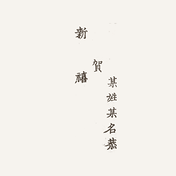
元旦
國曆 1 月 1 日
一元復始，萬象更新。寫一張新禧帖，給新的一年。

國曆 1 月 1 日
一元復始，萬象更新。寫一張新禧帖，給新的一年。
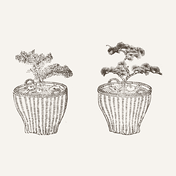
農曆十二月最後一日（含小年夜）
隔年飯插上春花，叫「萬年糧」，祈願年年有餘。
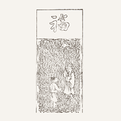
農曆正月初一
門上貼福，迎接新歲。
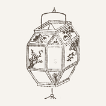
農曆正月十五
提燈、賞燈、猜燈謎，年節在燈火裡收尾。
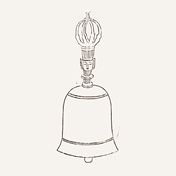
2 月 28 日
靜下心來，記得過去，祈願和平。
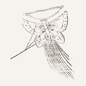
4 月 4 日
放一隻風箏，讓童心飛高一點。
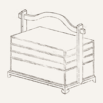
5 月 1 日
提盒裝好飯菜，向每一份勞動致意。
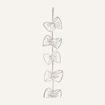
農曆五月初五
包粽子、掛艾草、划龍舟。
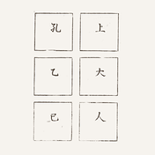
9 月 28 日（孔子誕辰）
「上大人，孔乙己」——舊時學童的第一張描紅。謝謝老師。
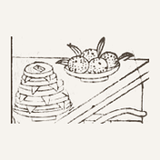
農曆八月十五
供月餅、擺果盤，等月亮升起，一家團圓。
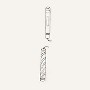
10 月 10 日
爆竹聲中，慶祝佳節。
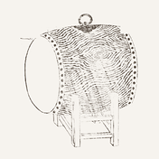
10 月 25 日
擊鼓相慶，記得這一天。
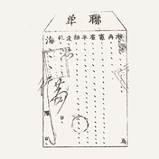
12 月 25 日
白紙黑字的約定，守住彼此的權利。